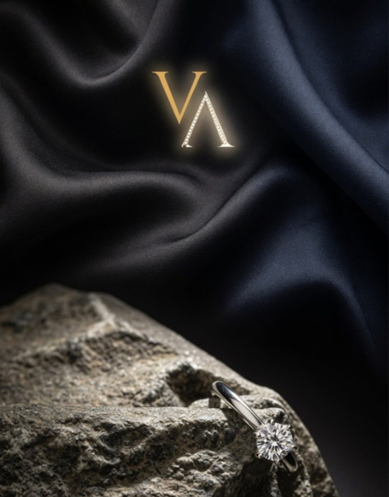
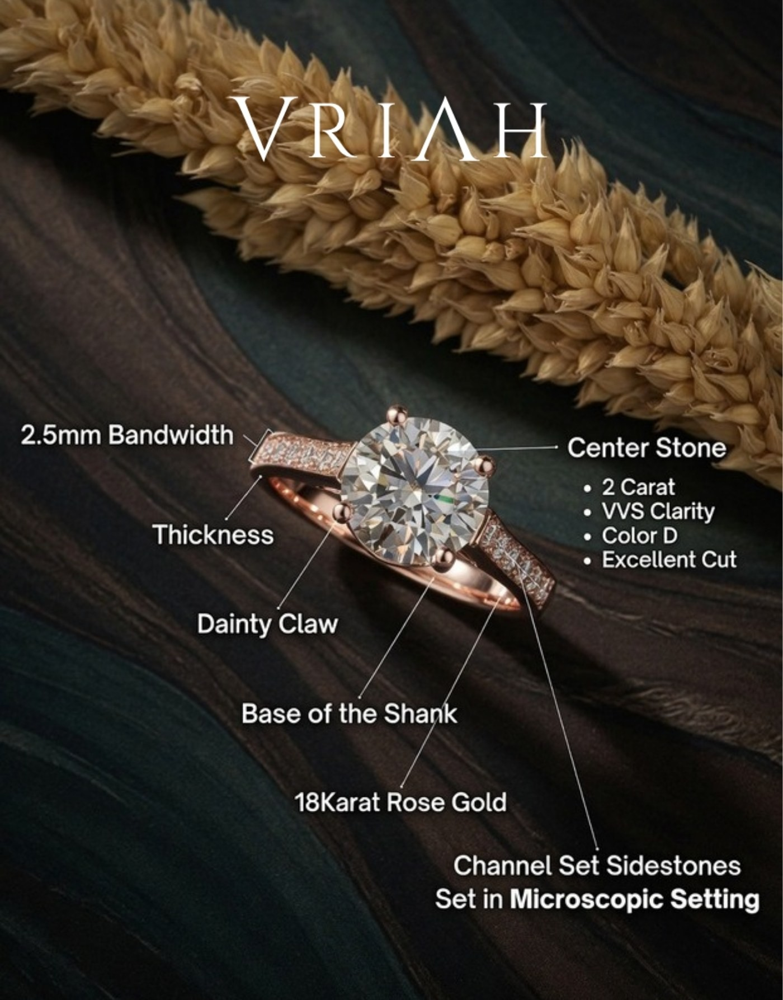
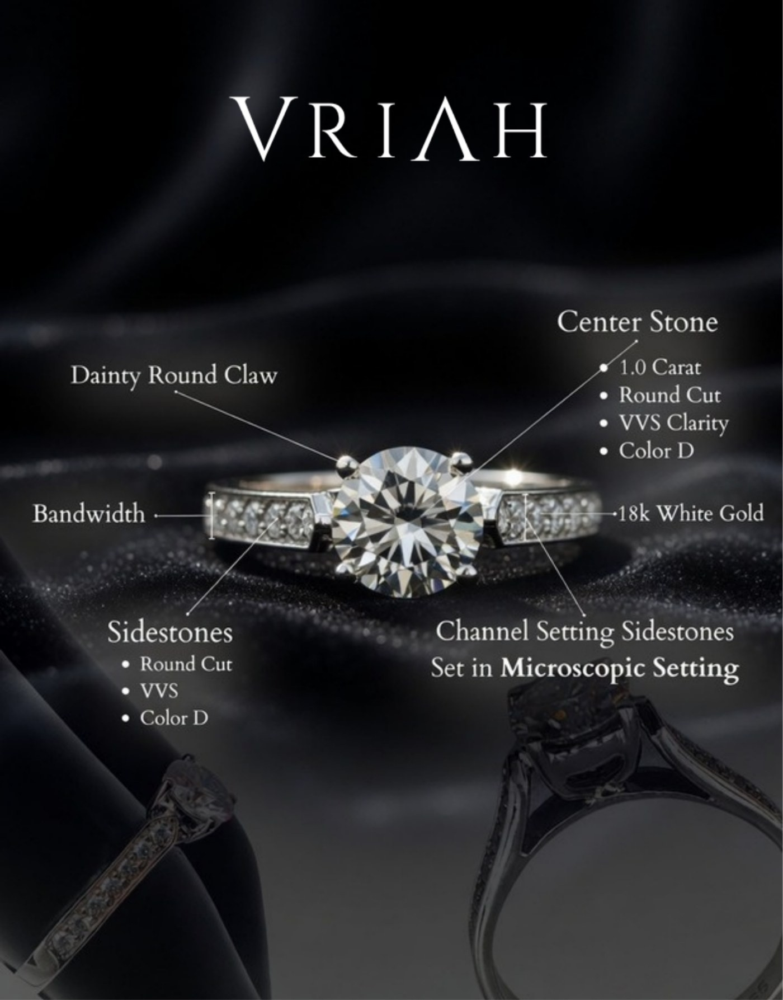
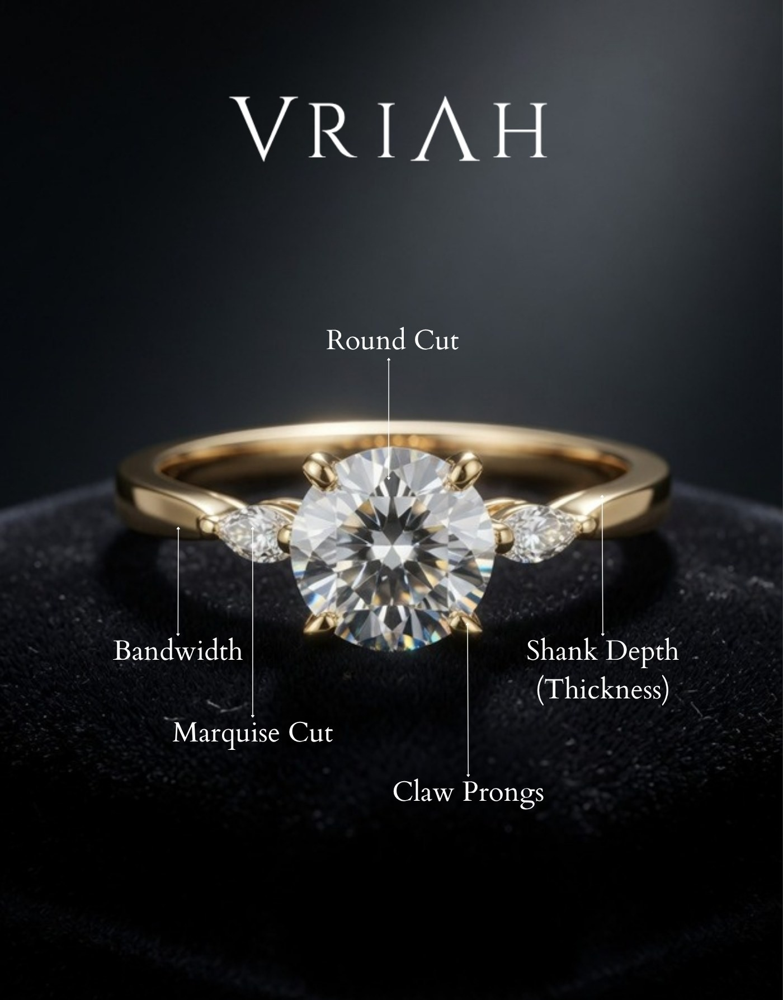

The atelier
Slow work, measured in tenths of a millimetre.
VRIAH rings are made one at a time, to order. This page explains how, what you can choose, and how to care for the piece afterwards.

How a ring is made
Five stages
Every ring passes through the same five stages, in this order.
Consultation
We meet in private or by video. You try sample settings and tell us how the ring will be worn.
Drawing
The ring is drawn part by part: centre stone, claws, head, shank width, shank depth and base shank.
Stone selection
We show you stones side by side under daylight lamps. Certified stones come with their IGI report.
Casting and setting
The band is cast in 14K or 18K gold. Pavé and channel stones are set under magnification in a microscopic setting.
Finishing
Every surface is polished or brushed by hand, the ring is sized and checked, then presented in its box.



Stone guide
Four ways to hold light
Every ring in the collection can be made with any of these stones. The table shows the sizes we offer and what each costs on Étoile, our six-claw solitaire, in 14K gold.
| Stone | Grade | Sizes offered | Étoile, smallest size | Étoile, 1.0 ct |
|---|
Lab-grown diamonds are D colour and VVS clarity, with an IGI certificate. Pink diamonds are IGI certified and priced on the lab-grown scale. Natural diamonds are offered from .20 to .90 carat on most designs.
Gold
14K or 18K
A karat is one twenty-fourth part. All three colours are available in both.
14 karat
58.5%
Fourteen parts gold in twenty-four. Harder and more resistant to scratches, a lighter colour. The better choice for very fine claws and daily wear.
18 karat
75%
Eighteen parts gold in twenty-four. A richer, deeper colour and a heavier feel. Softer, so it develops a gentle patina over time.
Anatomy of a ring
The words we use
You will see these terms on every piece in the collection and in our drawings.
- Claw or prong
- The small metal arms that hold the centre stone. Dainty round claws are fine and rounded; box claws are squared; button claws end in a small dome.
- Compass prongs
- Four claws placed north, south, east and west, so a square stone sits as a diamond shape.
- Halo
- A ring of small diamonds around the centre stone, which makes it look larger.
- Pavé
- Small diamonds set close together so the metal surface is almost covered.
- Channel setting
- Sidestones held between two walls of metal, with no claws between them.
- Microscopic setting
- Sidestones set under magnification with the smallest possible amount of metal showing.
- Shank width (bandwidth)
- How wide the band is when you look down at your hand.
- Shank depth (thickness)
- How thick the band is from the inside of the ring to the outside.
- Alluring band
- A band that narrows toward the centre stone. A semi-round surface is domed; a flat surface is level.
- Profile head
- The part of the setting that raises the stone. A higher head lets more light in from the side.
Ring sizing
Finding your size
We size in US sizes from 4 to 9, including half sizes. Measure at the end of the day, when fingers are largest.
If you are not sure, choose "Not sure yet" and we will size you at your appointment.
Care
Caring for your ring
Take it off for the gym, swimming and cleaning. Soak it in warm water with mild soap and brush gently under the stone with a soft brush.
Have the claws checked by a jeweller once a year, and sooner if the stone ever feels loose.
Appointments
See it in person
Private viewings are one to one, in the atelier or by video.